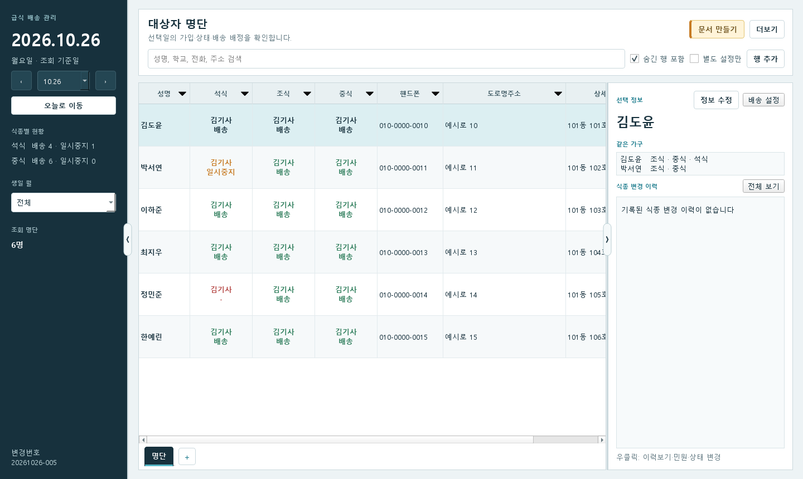

급식 배송 운영
급식 배송 운영 사용 설명서
필요한 작업을 아래에서 선택하세요.
처음 실행·다시 열기·업데이트
처음 실행할 때
- meal_delivery.exe를 실행합니다.
- 처음 설정이 열리면 운영 데이터 파일 → 위치 선택에서 명단을 저장할 파일을 정합니다.
- 자동 백업 폴더 → 폴더 선택으로 준비한 백업 폴더를 선택하고, 프로그램을 열 때 사용할 비밀번호를 입력합니다.
- 설정 완료하고 명단 옮기기를 누른 뒤 Excel 명단을 불러옵니다. 명단 불러오기의 열 연결·적용일 안내를 따라 진행합니다.
다음에 실행할 때
운영 파일 열기 화면의 파일 이름을 확인하고 비밀번호를 입력한 뒤 운영 파일 열기를 누릅니다. 같은 운영 파일을 다른 프로그램에서 사용 중이면 먼저 그 프로그램을 정상 종료해야 합니다.
운영 파일 비밀번호, 생성 Excel 비밀번호, 불러올 Excel의 열기 비밀번호는 용도가 다릅니다. 앱에는 비밀번호를 잊었어요 기능이나 별도 기관 복구 비밀번호 입력 기능이 없습니다. 기존 자료를 이어 쓰려는데 처음 설정 화면이 나오면 새 파일을 만들기 전에 담당자에게 기존 운영 파일 위치를 확인하세요.
업데이트와 자료 보관
실행 파일과 명단이 저장된 운영 데이터 파일은 별개입니다. 프로그램을 종료한 상태에서 새 실행 파일로 교체하고, 기존 운영 데이터·비밀번호 정보 파일·설정·백업을 보존합니다. 다시 열었을 때 파일 이름과 명단을 확인하세요.
백업 파일을 옮길 때는 같은 폴더에 있는 비밀번호 정보 파일도 함께 복사합니다. 일반 메뉴의 이전 변경번호 복구·분기는 현재 운영 파일 안의 저장 시점을 되돌리는 기능입니다. 파일 손상·분실로 백업 파일 자체를 복원해야 한다면 담당자에게 요청하세요. 현재 일반 시작 화면에는 백업 파일을 고르는 복원 버튼이 없습니다.
자주 하는 작업
챗봇에 사용법 물어보기
AI_사용설명서.txt 내려받기 — 이 파일 하나를 챗봇에 첨부하고 “이 설명서 기준으로 사용법을 알려줘. 중식 명단을 새 파일로 바꾸려면 어떻게 해?”처럼 질문하세요. 전체 사용법과 상황별 찾아보기가 들어 있으며 코드나 다른 문서를 함께 보낼 필요가 없습니다.
설명서 목차
- 식종 배송·일시중지·중지
배송 시작·재개, 잠시 중단, 중지, 잘못 입력한 기록 취소
- 이사 등록·파일 생성
주소 변경일 등록, 청구서·확인서·일일식수·배송목록
- 시트·칼럼 활용
시트 만들기, 칼럼 숨기기·추가, 검색과 정렬
- 생성 파일에 칼럼 연결
청구서·확인서의 1순위·2순위, 배송대타 출력 항목
- 그 밖의 기능
대상자 추가, 기사·일정 관리, 이력·민원, 불러오기와 백업
- 설정 전체 항목
문서, 배송·식수, 화면, 데이터 관리의 21개 설정
- 템플릿 변경
양식 선택, Excel 서식 수정, 다른 파일 연결과 기본 양식 복원
하고 싶은 일로 찾기
질문과 가까운 항목의 설명을 누르세요. 같은 안내는 AI용 설명서에도 들어 있습니다.
| 하고 싶은 일 | 사용 방법 |
|---|---|
| 처음 설치했는데 어떻게 시작하나요? 운영 파일을 다시 열고 싶어요 새 빌드로 업데이트하고 기존 명단을 계속 쓰고 싶어요 비밀번호를 잊었어요 백업 파일 자체를 복원하고 싶어요 실행 파일을 바꿨는데 처음 설정이 나와요 | 처음 실행·다시 열기·업데이트 |
| 명단 화면에서 원하는 기능을 어디서 찾나요? 오늘 명단으로 돌아가고 싶어요 | 명단 화면에서 찾을 위치 |
| 배송·일시중지·중지는 어떻게 다른가요? 우클릭에 원하는 상태가 안 보여요 | 상태를 바꿀 사람과 식종 찾기 |
| 새 식종을 시작하거나 중지한 배송을 다시 받고 싶어요 다음 주부터 배송을 예약하고 싶어요 | 배송 시작·재개 |
| 며칠만 도시락을 안 받고 싶어요 일시중지 종료일 다음 날 바로 배송되나요? | 정해진 기간 일시중지 |
| 다시 받을 날이 정해지지 않았어요 중지했는데 명단에는 -로 보여요 | 종료일 없이 중지 |
| 여러 사람을 한 번에 일시중지하고 싶어요 한 사람의 여러 식종이나 같은 가구를 함께 바꾸고 싶어요 | 여러 사람·식종을 함께 변경 |
| 잘못 등록한 일시중지 기록을 취소하고 싶어요 여러 식종 변경 기록을 함께 취소하고 싶어요 | 저장한 내용 확인·잘못 입력한 기록 취소 |
| 가족이 이사해서 날짜부터 주소와 기사를 바꾸고 싶어요 주소 오타만 고치고 싶어요 | 이사 날짜와 새 주소 등록 |
| 식수표·배송명단·청구서·확인서 중 어떤 파일을 만들어야 하나요? | 만들 파일 고르기 |
| 이번 달 청구서나 확인서를 만들고 싶어요 일일식수를 만들거나 특정 배송 형태를 빼고 싶어요 BOX 대상자는 식수에서 빼고 비고에는 남기고 싶어요 일일식수 비고에 요청사항과 이름을 넣고 싶어요 예전 명단 상태로 문서를 다시 만들고 싶어요 확인서 주차가 어떻게 나뉘나요? 행복도시락 학기중·방중·총괄은 어떻게 나뉘나요? 앞 단계 선택을 바꾸거나 문서 만들기를 취소하고 싶어요 월중에 가구를 합치거나 옮기면 확인서는 어느 가구로 나오나요? 월말에는 가구 소속이 없지만 그달에 식사를 받은 사람도 출력되나요? | 청구서·확인서·일일식수 만들기 |
| 기사에게 줄 배송목록을 만들고 싶어요 배송목록 칼럼 순서·정렬·용지 방향을 바꾸고 싶어요 | 배송목록 만들기 |
| 지금 보이는 명단만 Excel로 보내고 싶어요 전체 명단과 변경 이력을 모두 Excel로 받고 싶어요 | 지금 보이는 명단을 Excel로 저장 |
| 연락처용·배송용 시트를 따로 만들고 싶어요 시트 이름을 바꾸거나 삭제하고 싶어요 | 용도별 시트 만들기 |
| 칼럼을 숨기거나 다시 보이게 하고 싶어요 기본 칼럼 배치로 되돌리고 싶어요 | 칼럼 숨기기·다시 보이기 |
| 칼럼 순서·너비·이름·글자 정렬을 바꾸고 싶어요 왼쪽 날짜나 오른쪽 상세 영역을 접고 싶어요 | 칼럼 순서·너비·이름 바꾸기 |
| 특이사항 칼럼이나 선택 목록을 추가하고 싶어요 전화번호·날짜·최대 글자 수를 제한하고 싶어요 사용자 칼럼을 삭제하고 싶어요 | 새 칼럼 만들기 |
| 이름·학교·전화·주소로 사람을 찾고 싶어요 특정 동이나 학교만 보고 싶어요 여러 칼럼 순서로 정렬하고 싶어요 사람이 사라졌거나 검색 결과가 너무 적어요 이번 달 생일인 사람이나 별도 배송 설정이 있는 사람만 보고 싶어요 | 검색·필터·정렬 사용 |
| 가족의 주소나 연락처를 한 번에 고치고 싶어요 가족 한 사람만 다른 값을 쓰고 싶어요 같은 핸드폰인 가구를 합치고 싶어요 핸드폰을 지우거나 공용을 끄면 가구가 나뉘나요? | 같은 가구의 값을 함께 관리 |
| 다른 담당자의 시트 배치를 가져오고 싶어요 | 다른 담당자의 화면 배치 불러오기 |
| 청구서나 확인서에 다른 명단 값을 넣고 싶어요 확인서의 중괄호 항목을 연결하고 싶어요 | 청구서·확인서의 출력 칼럼 연결 |
| 핸드폰이 없을 때 전화번호를 대신 넣고 싶어요 출력 칸을 비워 두고 싶어요 | 1순위와 2순위 예시 |
| 식수·금액 칼럼을 옮기거나 계산 항목을 연결하고 싶어요 양식에 적힌 값이나 수식을 유지하고 싶어요 문서 항목 연결을 초기화하고 싶어요 | 식수·금액·연번의 연결 바꾸기 |
| 청구서에 일시중지 이력이나 개인 비고를 넣고 싶어요 | 청구서에 식종 변경 이력 넣기 |
| 배송목록에서 빈 값 대신 다른 칼럼을 쓰고 싶어요 | 배송목록의 출력 칼럼·대체값 |
| 연결한 값이 문서에 안 나와요 | 연결했는데 값이 나오지 않을 때 |
| 대상자를 한 명 추가하고 싶어요 연락처·학교·비고를 수정하거나 기존 값을 지우고 싶어요 잘못 등록한 명단 행을 삭제하고 싶어요 | 대상자 추가·정보 수정 |
| 한 사람이나 한 가구만 배송요일을 바꾸고 싶어요 BOX 같은 배송 형태를 추가하고 싶어요 | 개인별 배송요일·형태 변경 |
| 기사를 등록하거나 연락처를 수정하고 싶어요 담당 기사를 바꾸거나 기사를 일괄 교체하고 싶어요 일일식수의 기사 표시 순서를 바꾸고 싶어요 배송순서를 바꾸는 화면을 찾고 싶어요 | 기사 등록·담당 변경·배송순서 |
| 방문 순서를 드래그해서 바꾸고 싶어요 가구를 식종별 행으로 나누어 보고 싶어요 기사·식종별 명단을 Excel로 보내고 싶어요 필터가 있는 상태로 배송순서를 바꾸면 어떻게 되나요? | 배송순서관리 |
| 방학 학교 일정을 파일로 넣고 싶어요 학교 일정의 O와 X가 무슨 뜻인가요? 특정 학년만 급식이 없거나 일정 일부만 바꾸고 싶어요 공휴일에도 배송하거나 쉬는 날을 등록하고 싶어요 여러 휴무일의 대체 배송 날짜를 정하고 싶어요 중식이 안 잡히거나 학교 일정 안내가 나와요 | 학교 일정·휴무·단가 |
| 단가를 바꾸거나 월 중간부터 새 금액을 적용하고 싶어요 | 단가 관리 |
| 월별·날짜별 식수를 확인하고 싶어요 이번 달 배송일과 식사일 기준 수량을 비교하고 싶어요 언제 누가 무엇을 바꿨는지 확인하고 싶어요 | 월별 조회·민원·전체 변경 이력 |
| Excel 명단을 처음 넣거나 최신 명단으로 갱신하고 싶어요 열 연결·새 칼럼 추가·불러오지 않을 칼럼을 정하고 싶어요 Excel 오류를 고치거나 특정 행을 제외하고 싶어요 기존 값과 새 파일 값이 다른데 무엇을 반영하나요? 명단 불일치를 DB 값과 원본 값으로 비교하는 Excel을 저장하고 싶어요 불일치를 Excel로 내보낸 뒤에도 화면에서 직접 고칠 수 있나요? 방학 중식 대상자를 새 파일로 교체하고 싶어요 특정 칼럼 값이 있는 사람만 중식 명단에 반영하고 싶어요 학교가 바뀌거나 학년이 올라갔어요 이름과 핸드폰이 같은 사람이 있는데 동명이인을 선택하라고 나와요 이름은 같은데 핸드폰이 다른 사람에게 연결하라는 뜻이 뭔가요? 핸드폰이 달라도 이름과 세대주명이 같으면 동일인 의심으로 나오나요? 동일인 의심 행을 모두 다른 사람으로 신규 등록하고 싶어요 사람별 예외 보기에서 예외인 사람만 수정하고 싶어요 사람별 예외를 해제하거나 일괄 반영 방향을 다시 바꾸고 싶어요 같은 가구로 묶기와 기존 대상자 연결은 어떻게 다른가요? | 명단 불러오기 |
| 오래 배송하지 않는 사람을 보관함에서 찾고 싶어요 숨기는 기준 일수를 바꾸고 싶어요 | 장기 미배송 보관함 |
| 민원을 기록하거나 가족에게 함께 접수하고 싶어요 전체 민원을 검색하고 긴 내용을 복사하고 싶어요 | 전체 민원 |
| 이전 저장 상태로 되돌리고 싶어요 현재 작업을 남겨 두고 예전 상태에서 따로 작업하고 싶어요 다른 분기로 전환하거나 원래 분기로 돌아가고 싶어요 | 이전 저장 시점 확인·복구 |
| 수정했는데 화면이 그대로예요 날짜를 선택할 수 없거나 저장·파일 생성이 안 돼요 다른 사용자가 사용 중이거나 자료가 바뀌었다고 나와요 확인서나 청구서를 만들 때 가구 소속이 2개라고 나와요 청구서나 확인서에서 가구 소속이 없다고 나와요 | 작업 중 막힐 때 |
| 공통 제공기관 이름을 바꾸고 싶어요 | 공통 제공기관 |
| 전체 대상자의 기본 제공 요일·배송요일을 바꾸고 싶어요 | 식종별 배송 기본값 |
| 중지 상태를 빨간색으로 표시하는 기간을 바꾸고 싶어요 | 중지 표시 기간 |
| 다른 PC의 담당자와 같은 화면 배치를 쓰고 싶어요 | 다른 사용자 화면 설정 불러오기 |
| 중지 후 다시 배송했는데 일시중지로 보여요 | 일시중지 자동변환 |
| 배송순서 입력 방식 설정을 바꿨는데 드래그 결과가 같아요 | 배송순서 입력 방식 |
| 처음 명단 적용일을 이달 1일로 앞당기고 싶어요 | 초기 명단 적용일 |
| 과거 자료에 가구 소속이 빠졌어요 | 가구 소속 기록 복구 |
| 도로명주소로 구주소를 채우고 싶어요 도로명주소에 경기도 성남시를 붙여 구주소를 조회하려면 어떻게 하나요? | 구주소 업데이트 |
| 급식·행복도시락 양식을 바꾸고 싶어요 확인서를 1식 가구부터 순서대로 배치하고 싶어요 확인서 마지막 주에 다음 달 토·일요일을 표시하거나 빼고 싶어요 | 문서 양식 |
| 이번 달에 미리 배송한 다음 달 식수를 청구에 넣거나 빼고 싶어요 | 식수·청구서 설정 |
| 문서 항목 설정은 어디에 있나요? | 문서 항목 설정 |
| 명단에서 숨긴 칼럼을 배송목록 선택에서도 빼고 싶어요 | 배송대타 칼럼 표시 |
| 생성 Excel 비밀번호를 보거나 복사·변경하고 싶어요 | 생성 Excel 비밀번호 |
| 문서를 저장하는 기본 폴더를 바꾸고 싶어요 | 문서 저장 폴더 |
| 출력 파일이 자동 삭제되지 않게 하거나 보관기간을 바꾸고 싶어요 | 출력 파일 보관기간 |
| 운영 데이터 파일을 다른 위치로 옮기고 싶어요 | 운영 데이터 위치 |
| 자동 백업 폴더를 바꾸고 싶어요 백업이 실패했다는 안내가 나와요 | 자동 백업 폴더 |
| 프로그램을 열 때 쓰는 비밀번호를 바꾸고 싶어요 | 운영 파일 비밀번호 변경 |
| 주소 API 키를 등록하거나 확인·삭제하고 싶어요 | 주소 API 키 |
| 일일식수나 배송목록 양식이 미설정이라고 나와요 | 급식·행복도시락 양식 선택 |
| Excel 양식의 글꼴·색·테두리를 고치고 싶어요 양식 파일을 바꾼 뒤 취소하면 무엇이 유지되나요? | 일일식수·배송목록을 Excel에서 수정 |
| 양식에서 행·열·인쇄 설정을 바꿔도 되나요? | 서식을 바꿀 때 유지할 부분 |
| 다른 일일식수·배송목록 양식 파일을 연결하고 싶어요 | 다른 양식 파일로 변경 |
| 청구서·확인서 Excel 양식 파일을 직접 교체하고 싶어요 | 청구서·확인서는 무엇을 바꿀 수 있나요? |
| 기본 양식으로 되돌리거나 양식 연결을 해제하고 싶어요 | 기본 양식으로 돌아가기·결과 확인 |
| 핸드폰이 같은데 한 가구로 안 묶여요 같은 가구로 묶을 칼럼을 선택하고 싶어요 여러 칼럼이 모두 같은 사람끼리 가구를 합치고 싶어요 기존 명단에도 가구 묶기 기준을 적용하고 싶어요 검색·필터에 보이는 가구만 합쳐지나요? 가구 묶기 기준에서 저장 버튼이 비활성화돼요 | 가구 묶기 기준 |
| 행복도시락 중식·석식 일일식수를 만들고 싶어요 행복도시락 일일식수의 기본 식종은 무엇인가요? 행복도시락 배송목록은 어떤 양식을 사용하나요? 행복도시락 일일식수의 기사별 소계와 전체 합계를 확인하고 싶어요 금요일 일일식수에 목요일 석식이 표시되나요? 행복도시락 일일식수의 조식·석식·중식은 어느 주 식수인가요? 11월 3일 조식은 같은 주 금요일 식수로 나오나요? 행복도시락 일일식수에서 같은 주 식수가 없으면 0이 나오나요? | 행복도시락 일일식수 |
| 급식이나 행복도시락 일일식수 항목을 연결하고 싶어요 일일식수가 문서 항목 설정에서 선택되지 않아요 일일식수의 기사·지역·주소·비고를 바꾸고 싶어요 일일식수의 식수와 합계도 명단 칼럼으로 연결하나요? 급식과 행복도시락 일일식수 비고에 식종 변경 이력을 연결하고 싶어요 마우스로 일일식수 연결 항목을 선택하면 적용되나요? | 급식·행복도시락 일일식수의 공용 항목 연결 |
| 전체 민원에서 동일 가구 기준 칼럼을 보고 싶어요 | 전체 민원에서 동일 가구 기준 확인 |
| 창을 최소화·최대화하고 크기를 기억하게 하고 싶어요 | 창 최소화·최대화와 크기 기억 |
명단 화면에서 찾을 위치
설정·조회·편집·문서 준비 등 작업창은 Windows 작업 표시줄의 창 목록이나 Alt+Tab으로 각각 선택할 수 있습니다. 작업 표시줄 아이콘이 하나로 묶여 있으면 아이콘에 마우스를 올려 원하는 창을 고르세요. 작업창을 열어 둔 채 메인 명단으로 돌아갈 수 있으며, 메인 창을 닫으면 함께 열린 작업창도 닫힙니다.


| 화면 위치 | 쓰는 방법 |
|---|---|
| 왼쪽 날짜 | 이 날짜를 기준으로 배송 상태와 주소를 보여줍니다. 오늘 명단을 보려면 오늘로 이동을 누릅니다. |
| 위쪽 검색칸 | 이름·학교·전화번호·주소를 입력해 사람을 찾습니다. |
| 석식·조식·중식 칸 | 상태를 바꿀 사람의 식종 칸에서 마우스 오른쪽 버튼을 누릅니다. |
| 오른쪽 위 문서 만들기 | 청구서·확인서·일일식수·배송목록을 만듭니다. |
| 오른쪽 위 더보기 | 명단 불러오기, 기사 관리, 월별 조회, 칼럼 관리, 설정을 엽니다. |
| 명단 아래 시트 이름과 + | 표시할 칼럼이 다른 시트를 만들거나 선택합니다. |
이 설명서의 스크린샷은 누르면 크게 볼 수 있습니다. 큰 화면을 닫으려면 닫기 또는 키보드의 Esc를 누르세요.